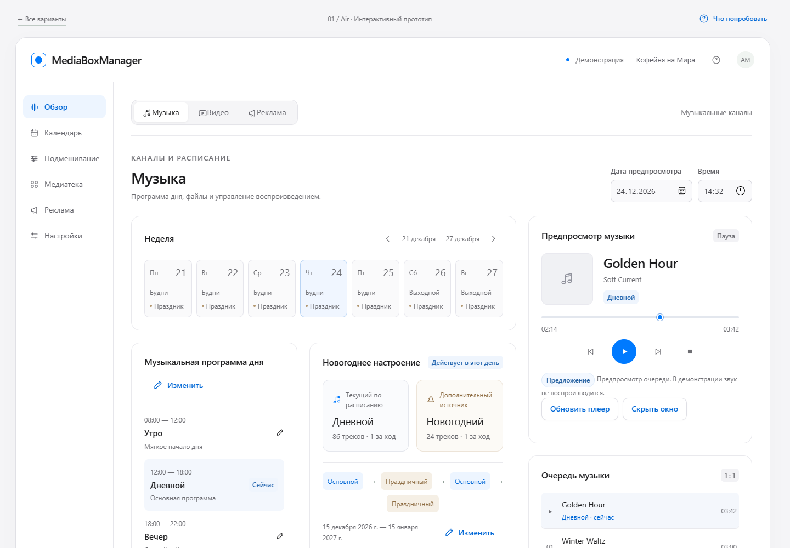
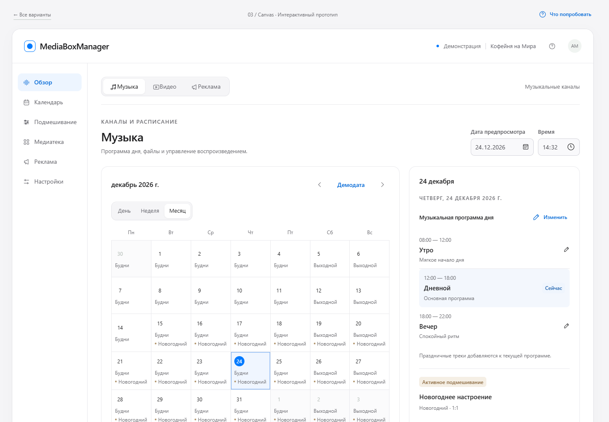
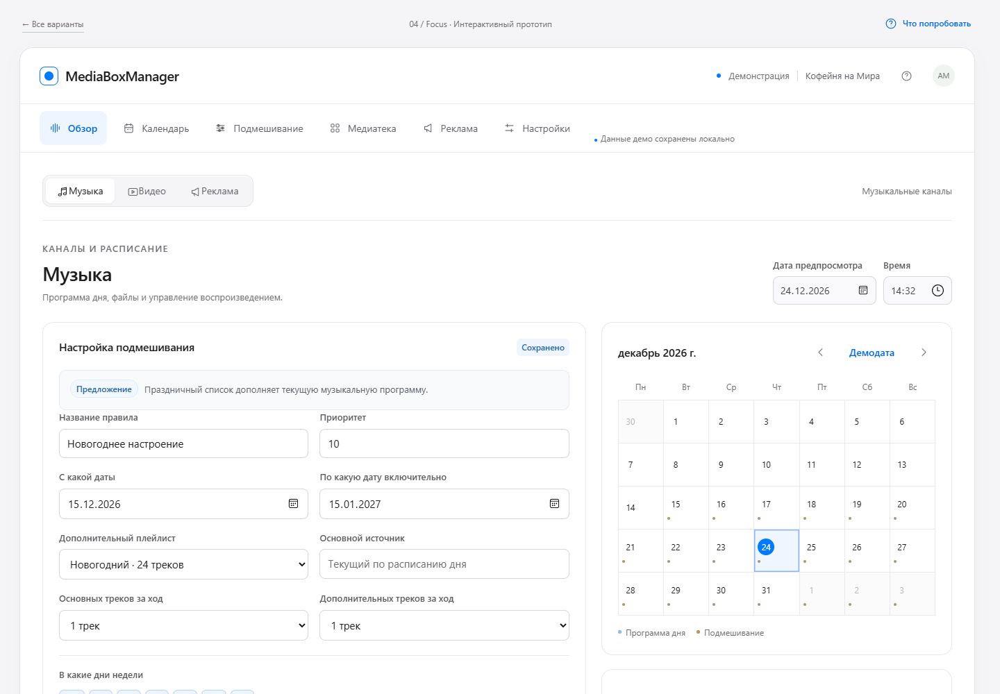
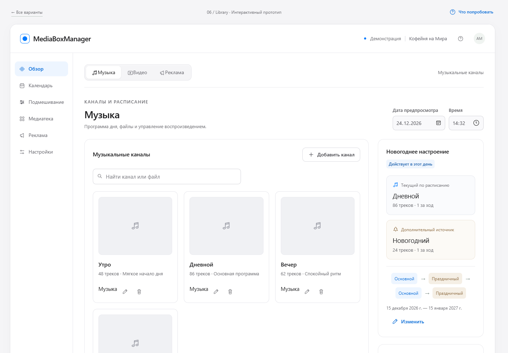
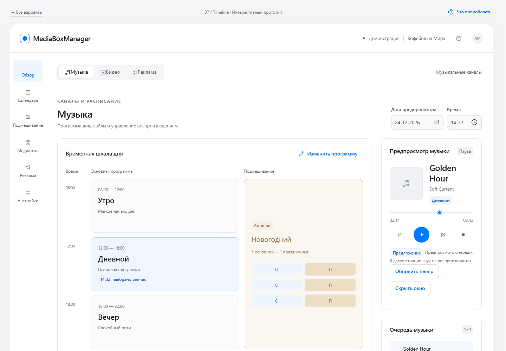

Светлая форма. Живой сценарий.
Музыка и видео.
Под контролем.
Пять композиций нового MediaBoxManager: ясная типографика, светлые поверхности и точные детали. Открывайте и пробуйте — музыка, видео и реклама, каналы, расписание и медиафайлы. Текущие возможности дополняют предлагаемые улучшения: гибкий календарь, исключения по датам и новогоднее подмешивание музыки.
Сначала попробуйте четыре действия
Текущие возможности + предлагаемые улучшенияПереключитесь на видео
Выберите «Видео» в верхней панели. Посмотрите видеоканалы, их расписание и файлы. Экран предпросмотра показывает демо.
Запустите демоэфир
Вернитесь к музыке. Нажмите «Воспроизвести» и «Следующий трек». Прогресс и очередь меняются без звука.
Смените дату
Выберите 24 декабря 2026, затем 16 января 2027. Проверьте, когда праздничное правило действует.
Измените 1 : 1 на 2 : 1
В музыкальном режиме откройте «Подмешивание» и задайте 2 основных трека за ход, затем нажмите «Сохранить правило». Проверьте новую очередь.
Выберите композицию
Все варианты светлые и интерактивные
Air
Спокойный рабочий стол с боковой навигацией. Каналы и расписание рядом с медиафайлами; музыка и видео доступны в одной композиции.
Открыть прототип
Canvas
Календарь как рабочее полотно. Выберите дату и посмотрите расписание музыки или видео. Настройки выбранного дня — в инспекторе справа.
Открыть прототип
Focus
Новое музыкальное правило в центре внимания: даты, источники и пропорции. Видеоканалы и их расписание доступны через переключение режима.
Открыть прототип
Library
Медиафайлы как точка входа. Откройте музыкальный канал или видеоканал и просмотрите его содержимое; расписание остаётся рядом.
Открыть прототип
Timeline
Расписание музыки или видео на временной шкале. Нажмите на программу, чтобы изменить часы. В музыке отдельно показано новое праздничное правило.
Открыть прототип